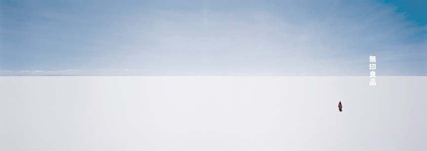
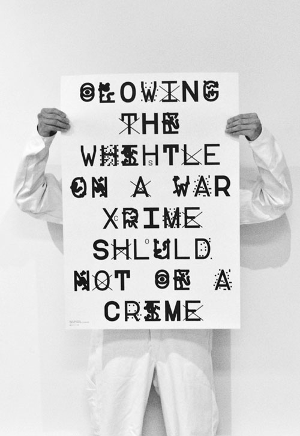
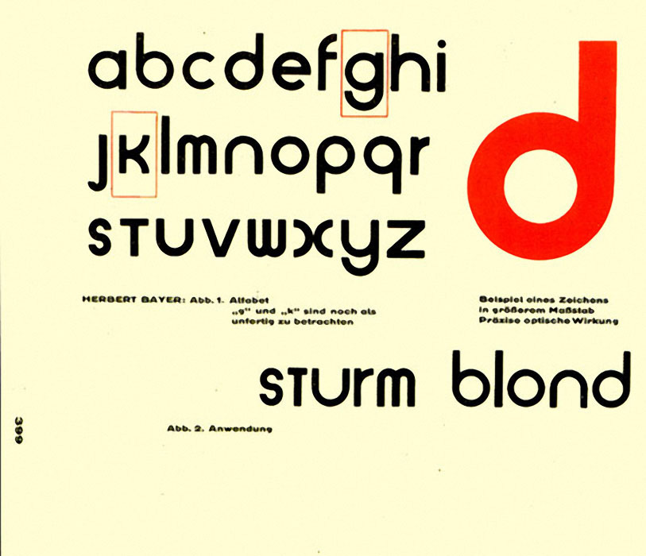
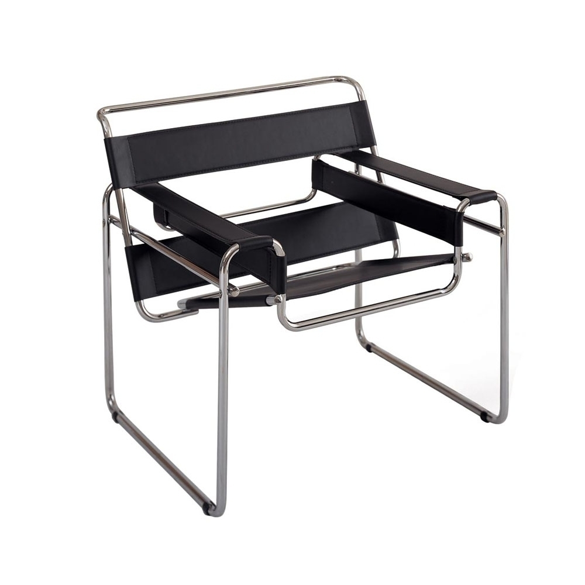

Shared Voices
Hara Kenya
RISD AUDITORIUM 06:00PM
01.30.15
Kenya Hara: the future of design
The product designer Kenya Hara asks to picture a shallow plate in my mind. “Now imagine a slightly deeper plate,” Hara says, “that gets deeper and deeper and eventually becomes a bowl.“White”
“Now see the bowl get deeper and deeper and deeper,” he says, “until it turns into a cup.”
“If somebody were to ask you,” he continues, “‘At what point is it a plate? At what point a bowl, or a cup?’ You would have to question your understanding of the boundary between each object.”
Hara views this kind of thought process as an “awakening” that deepens our understanding of the objects in question. “This is what I mean when I say design should make the known become unknown,” he says.
Born in 1958, Kenya Hara has helped mold the face of contemporary Japanese design alongside the equally influential industrial designer — and Hara’s friend — Naoto Fukusawa. Whether you realize it or not, you will have definitely encountered his designs before and even if you can’t recall something specific, you’ll at least be aware of his ideas.
In 2002, he became an adviser and art director of Muji, and raised the profile not only of the country’s most famous nonbrand brand (Mujirushi Ryohin, or Muji for short literally means “no-brand quality goods”), but at the same time effectively crafted the way Japanese design is perceived outside Japan.

His work at Muji, however, is only one part of his portfolio. He is also a graphic designer, a design professor at Musashino Art University, director of the Hara Design Institute, author of critically acclaimed books “White” and “Designing Design,” and a curator of large-scale design exhibitions. “There are many balls in the air, I can’t count how many balls I’m juggling,” he says. But being busy across many domains is good for Hara, it keeps him able to clearly identify the problems of his diverse clients.
“I only have two types of jobs,” he says. “The first are jobs where I’m commissioned to make work and the second are jobs where I propose an idea to society, where I suggest another way of looking at something.”
These proposals have sometimes seemed absurd, but they have led him to create some of his most interesting exhibitions and writings: What do macaroni and architecture have in common? What would the world look like built at a nonhuman scale? What could common daily products become if they were redesigned? How can we design for all five senses?
What makes Hara really valuable as a Japanese designer is his ability to articulate a clear philosophy about Japanese design that is sensitive to the present as much as it is to the past. Looking ahead, if there is one man in the country who can project what the future of Japanese design could (and should) involve, it’s Kenya Hara.
To talk about the future of Japanese design we need to look back to the postwar period, when industrial design in Japan went hand-in-hand with local Japanese manufacturing. For almost 50 years after World War II, the number of people working in Japanese factories making such things as fridges, televisions, air conditioners and domestic industrial products increased. The number of manufacturing workers in such jobs peaked at 16.03 million people in October 1992.
According to a report released by the Internal Affairs Ministry in February 2013, the number of people working in manufacturing at the end of 2012 was just below 10 million, the lowest number in more than 50 years. Firms that churn out low-cost, mass-produced goods have moved assembly lines offshore, and Hara thinks the manufacturing of other goods is likely to follow.
“This industry is now reaching its end,” he says. “We are going through a change, from having to create products to having to create value.”
The type of value he is talking about is the value that can be found in a piece of Swiss Emmental cheese. No, Hara is not joking.
When you eat a piece of Emmental cheese, he explains, you consume more than just pressed curds of milk from Switzerland, you also consume culture (Both kinds — Eds.).
“It’s about the value that’s created around the product,” says Hara, speaking broadly about Swiss cheese, French wine or German bread.
Hara believes that Japanese designers need to consider how to create — or design — value, to think of culture as a resource. “When we typically think of resources we think of materials and minerals,” Hara says, “but a resource can also be aesthetic, or even cultural.”
He believes that Asian countries have a key cultural resource that cannot be found anywhere else in the world.
“Lifestyle has value in Asia,” he says. The Swiss have their cheese, the French their wine, but Hara’s future Japan will be based on the export of a way of life.
Hara is not the first person to think about Japan’s fading economic and cultural power, but his ideas are wrestling with the problem at a far more structural level than the Ministry of Economy, Trade and Industry’s “Cool Japan” solution. This government initiative has a tough job trying to get beyond easy stereotypes about Japanese pop culture abroad. In short, it has yet to live up to its promise.
A 2012 report singled out “media and content” — that is, most likely anime and manga — as the most important resource to spread abroad in the years leading up to 2020.
But Hara’s eyes are clearly fixed on other resources.
“What are Japan’s resources?” he asks, “I’m particularly thinking about traditional aesthetics. I’ve identified four keywords related to this: sensai (delicateness), chimitsu (meticulousness), teinei (thoroughness or attention to detail) and kanketsu (simplicity).”
Hara sees the migration of domestic manufacturing to other Asian countries as one factor influencing structural change in Japanese design.
“I feel the designer’s role has changed in recent years from one of creating beautiful forms or clear identification for brands to one where the designer himself visualizes the possibilities of an industry.” And just to ensure he gets his point across, he restates his position in English. “Visualizing and awakening the hidden possibility of an industry,” he says.
It seems overworked Japanese designers may not be getting a break anytime soon.
By now, the sun has set outside and the streets of Ginza are glistening with streetlights and colored lightboxes. Hara’s personal assistant, Yoshino Nihonyanagi, enters the room and informs us that we will need to finish the photo shoot before the library closes. We don’t have much time. What’s more, she adds for good measure, Hara will need to attend an awards ceremony soon.
While his portrait is being taken, Nihonyanagi shares her thoughts about working with the country’s preeminent designer for the past two years.
“I’ve already filled every day of his schedule until 2015,” she says. “I’ve turned down at least 15 to 20 interviews this month just because I couldn’t find the time for them. We were only able to fit you in because of a cancellation.”
His days are spent with students at the university he teaches at, or with interviewers or clients. Nihonyanagi notes that Hara only really gets time to reflect on his work and write his books late at night and when he is 35,000 feet in the air, traveling overseas for a job.
Mun Sang
CIT BUILDING 05:00PM
02.17.15
Making Democracy Legible: A Defiant Typeface
Our lives in cyberspace are overloaded with impalpable and extensive personal information that is gathered, intercepted, deciphered, analyzed, and stored. With this information government and corporations can easily create an informational architecture that traps us in the structures of the World Wide Web and social media. Restricting and repressing our communication tools under the name of “homeland security” is only a small step into a totalitarian society. This non-physical-yet-ideological violence is what allows us to lapse into lethargic silence. But really, we shouldn’t be afraid to question the authorities’ continual intrusions.

Marcel Bruer
CHASE CENTER 06:00PM
03.20.15
Marcel Breuer: Bauhaus and Typography
The Bauhaus philosophy follows that a design should utilize the technology and materials available to meet consumer needs and affordability. In this spirit of Bauhaus, Marcel Breuer rather focuses on functionality, affordability and quality instead of decorations and details. Breuer throws off unnecessary parts and only exposes the minimal skeleton of the chair: the main structural metal frame and the canvas. With the welded seam of the metal frame, it could have not been bent. However, the German steel manufacturer Mannesmann introduced seamless steel tubes that made the production and the design feasible for mass production of durable chairs, such as Breuer’s. In contrast to the other chairs produced during the 1920s, its design was simple; by exposing its structural elements, Breuer has viewers and actual users come to physically recognize the functional aspects of a chair. This is contributed by the use of the tubular steel frame, which was inspired by curved handlebars of the Adler bicycle.
The Bauhaus movement also influenced typography. Bauhaus typography was rational and geometric which would allow for better readability of forms and functions. The Bauhaus artists believed that the serifs of each letterform were not essential and admired the simple forms of sans serif typefaces. Each new typographic design aimed to removing superfluous elements of a letterform. Of many typefaces designed during Bauhaus, Universal type remains renowned. The strokes of letterforms resemble those of Wassily Chair and consisted of uniform thickness, which counters the traditional typefaces.

The Bauhaus movement also influenced typography. Bauhaus typography was rational and geometric which would allow for better readability of forms and functions. The Bauhaus artists believed that the serifs of each letterform were not essential and admired the simple forms of sans serif typefaces. Each new typographic design aimed to removing superfluous elements of a letterform. Of many typefaces designed during Bauhaus, Universal type remains renowned. The strokes of letterforms resemble those of Wassily Chair and consisted of uniform thickness, which counters the traditional typefaces.
